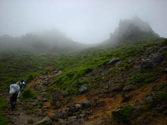
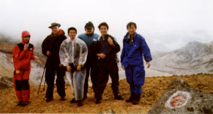
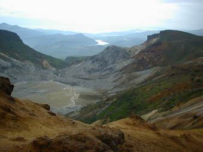
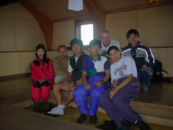
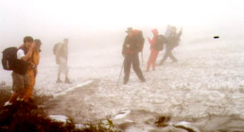
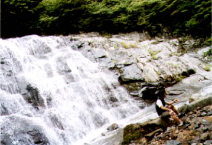
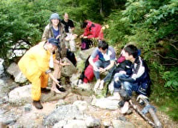

Photos by Iulia and Terry

On the way up through mist and rain, shortly after we
spent some 2 hours in a mountain hut to wait for better
weather.The hut conveniently had an onsen!

From left to right: Takako, Björn, Chen, Hafiz, Chao
and Terry at the crater (Adatara-san is an active volcano).
The rain miraculously decided to stop, and a very strong
wind blew us dry and revealed ...

... this beautiful view of the crater with Bandai-san
just off the photo to the left.

We spent the night in this emergency hut, had a nice
barbeque and did not set the hut on fire.

The 2nd day, on the way down from the hut again through
rain, mist and here even snow.

We had to come down this waterfall ...

.. after which nobody was left with dry feet.